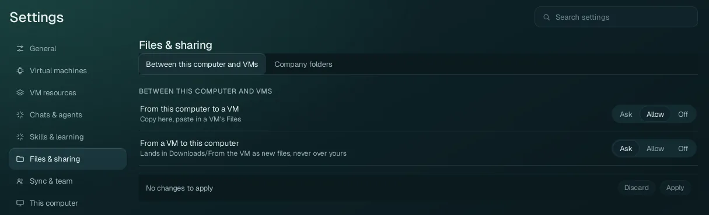
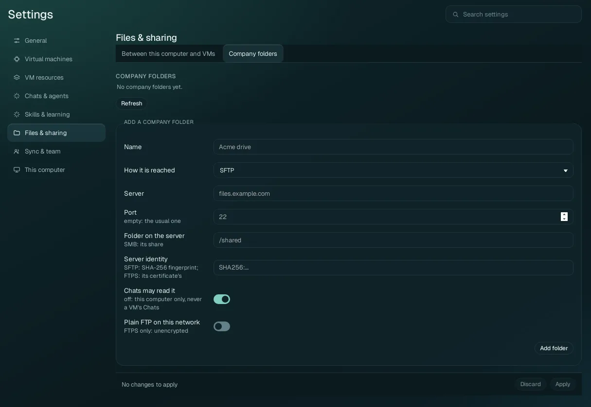

Settings › Files & sharing
Whether files may be copied and pasted between your computer and the VMs, and the company file servers your Chats may read.
How to move files in practice (copy and paste, the Explorer, Downloads/From the VM): Files and sharing.
Between this computer and VMs#

| Option | Values | What it does |
|---|---|---|
| From this computer to a VM | Ask, Allow (default), Off | Files you copy on your computer (in your file manager) and paste in a VM's Files. Allow: they are copied in when you paste. Ask: Wazza OS asks you each time. Off: files are never copied in this way (text still is). |
| From a VM to this computer | Ask (default), Allow, Off | Files you copy in a VM's Files and paste
on your computer. They land in your Downloads/From the VM folder as new files, never over one of
yours. Ask: Wazza OS asks you each time (default). Allow: without asking. Off: never. |
These two rules are about files. Copied text goes both ways between your computer and the VM in every
case. Agents follow the same rule when they copy files to your computer (computer.files.upload): with
Ask, you get the question.
Company folders#

A company folder is a folder on a file server (your company's, or your own NAS) that Wazza OS connects to. A folder
the Chats may read is in every VM at /home/ubuntu/Company/<Name>, read-only, so
agents can read your company's documents without being able to change them. The list shows each folder with its
name, how it is reached, its status in words (connected, needs your login, not reachable…) and its buttons.
Add a company folder#
| Field | What to enter |
|---|---|
| Name | The name it gets in the VM (for example Acme drive). |
| How it is reached | SFTP (over SSH), FTPS (explicit TLS), or SMB (a Windows share or a NAS). |
| Server | The server's name or address (for example files.example.com). |
| Port | Empty: the usual one for the protocol (22 for SFTP). |
| Folder on the server | The folder to show (for example /shared); for SMB, the share's name. |
| Server identity | SFTP: the server's SHA-256 key fingerprint (SHA256:…); FTPS: its
certificate's fingerprint. Wazza OS connects only to that server, never to an impostor. |
| Chats may read it | On (default): the folder is in every VM, read-only. Off: it stays on this computer only, never in a VM's Chats. |
| Plain FTP on this network | Off (default). For FTPS only: allow unencrypted FTP to a server on your own network that has no TLS. |
Click Add folder. Then use the folder's row:
- Log in: your own login for that server, kept only on this computer, encrypted.
- Connect and Disconnect; Forget my login.
- Pin this certificate: for an FTPS server whose certificate no authority of your computer signed, once you checked the fingerprint shown with the server's owner.
With a team account, the team's owners and admins add folders for every member (each member then logs in with their own login); without a team, the folders you add are your own.